IoT Workshop
Leonard Lee, Hans Perera, Max Philips
Internet of Things (IoT)
“extend[s] Internet connectivity beyond standard devices, such as desktops, laptops, smartphones and tablets, to any range of traditionally dumb or non-internet-enabled physical devices and everyday objects”
Things Like These:
- speakers
- televisions
- lighting
- thermostats
- kitchen appliances
- vehicles/planes
- fitness equipment
- vending machines/kiosks
- switches/outlets
Why?
Connecting devices to the internet and to each other provide some form of value:
- remote access
- home automation (smart homes)
- cloud integration
- real time monitoring/tracking/notification
Objectives
- Learn Basics of Electronics
- Learn to use Arduino IDE
- Learn about various WIFI protacols
- Learn to use Blynk app
- Create a Blynk app widgets
Electronics
Voltage
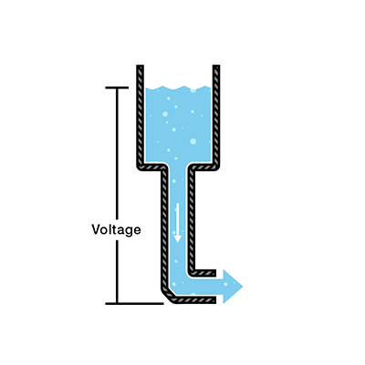Current

resistance
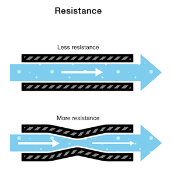Ohm's Law

quiz time
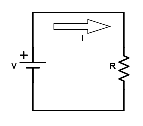- I=2A, V=4v, R=?
- I=500mA, R=500ohm, V=?
polarity
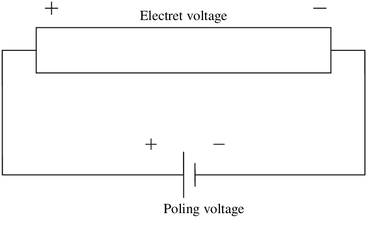current flow
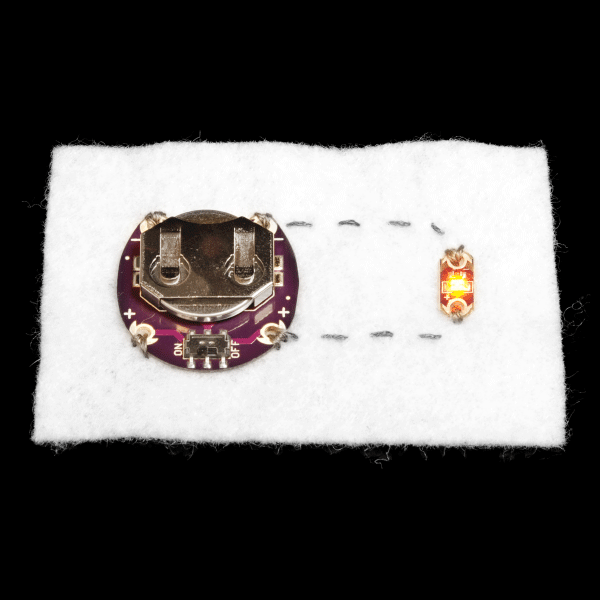power
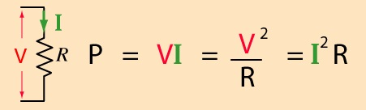power example
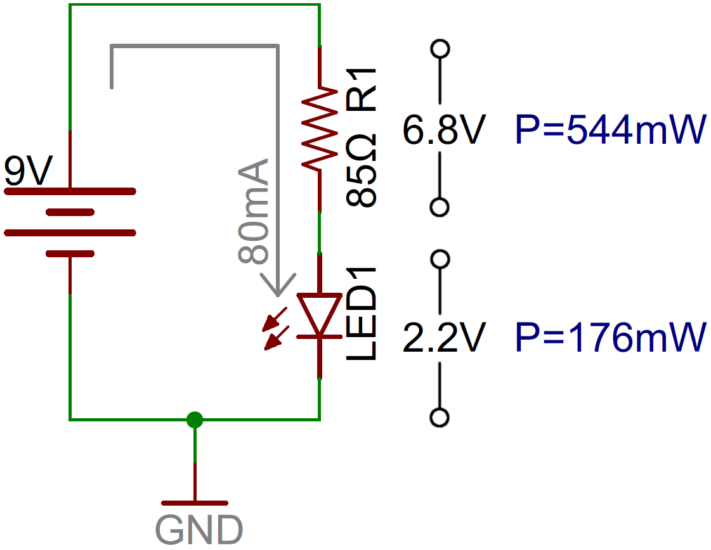Electronic Components
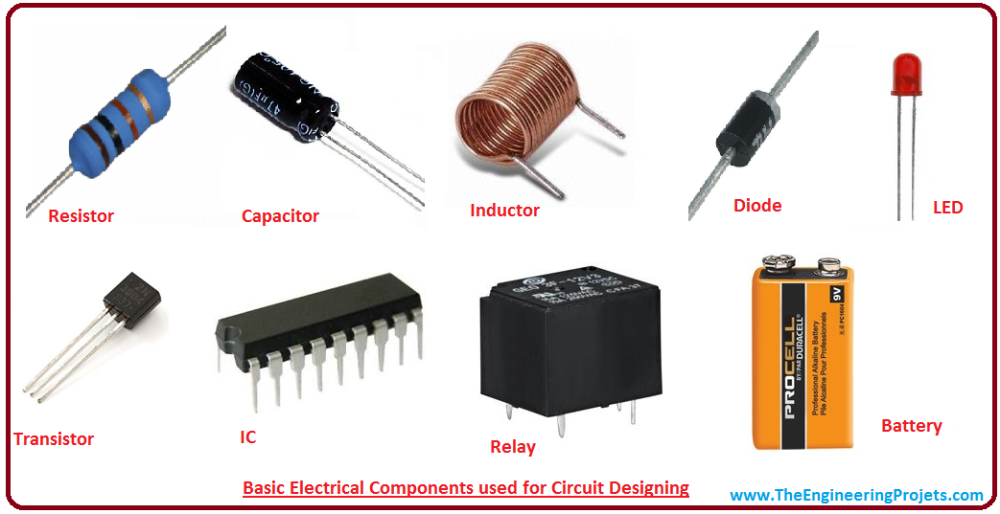Resistor
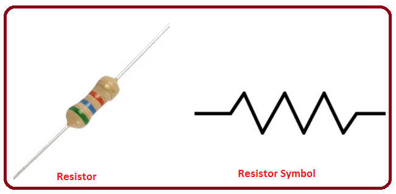As the name suggests, it is used for creating resistance in the flow of current.
The resistance of any resister is measured in ohms.
Capacitor
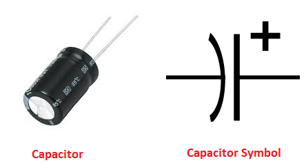Working principle of a capacitor is same like a battery. It is used for the storage of electrical charge.
The capacitance of a capacitor is measured in farads.
Inductor
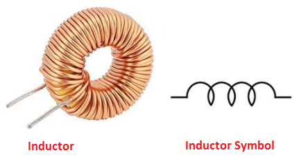An inductor is a simple coil of wire used in many electrical circuits. When a current flows through the inductor it stores energy in the magnetic field of the inductor.
The inductance of a inductor is measured in Henry.
Diode
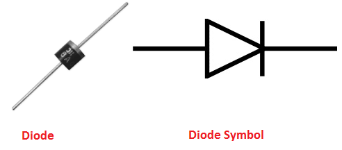A diode is a component that allows the current to flow in one direction only.
Led
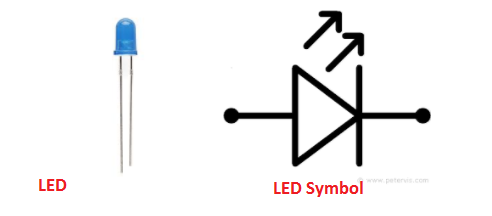LED is a light emitting diode which works only when current flows through it.
Transistor
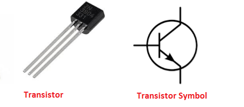Transistor is more like a switching device mainly used for switching and amplification purpose. It consists of three elements i.e. emitter, base, collector.
Transistor comes in two main types, NPN and PNP transistor.
Integrated Circuits
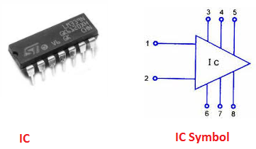An Integrated Circuit is a complete circuit that consists of transistor, diodes and other elements. All these elements are placed on the small chip of silicon. Integrated circuits are widely used in modern electronic devices such as laptops and cell phones.
Relay
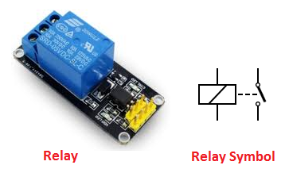It works as an electromagnetic switch which gets triggered when a small amount of current flows through it.
Battery
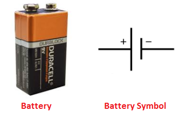Battery is an source of electrical energy, generated by a chemical reaction.
Esp8266 Kit
The heltec esp8266 is a development board that uses the ESP8266 microcontroller/SoC to connect to the Internet. It is much more powerful than some of the standard Arduino boards, though it has slightly fewer GPIO pins.
Overall, it is a good balance between size, capability, and cost.
Simple Circuit
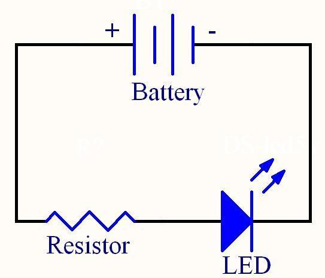Preparing the IDE
- install CH340G driver
- install the Arduino IDE
- Preferences > add an Additional Boards Manager URL:
http://arduino.esp8266.com/stable/package_esp8266com_index.json - Tools > Board > Boards Manager... > esp8266 > Install
- Tools > Board > ESP8266 Modules > Generic ESP8266
Arduino Hello world
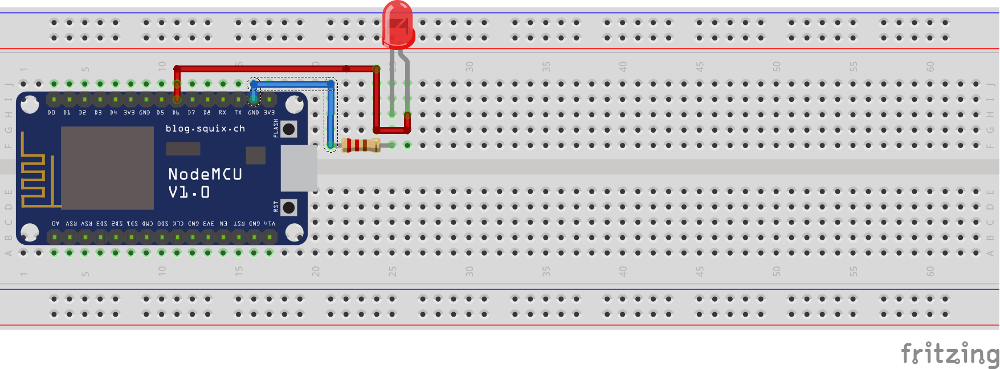Upload Your First Sketch
- connect the esp module to your computer using the micro USB cable
- select the correct COM port under Tools > Port
- open the Blink example sketch under File > Examples > ESP8266 > Blink
- click on the Upload icon at the top (or CTRL+U/⌘+U)
- After the sketch is successfully uploaded, the blue LED on the D1 Mini should start blinking! This is the Hello World of electronics.
- If your LED doesn't blink, check for the correct pin number.
Blink: What's Happening in setup() and loop()
void setup() {
pinMode(LED_BUILTIN, OUTPUT); // Initialize the LED_BUILTIN pin as an output
}
void loop() {
digitalWrite(LED_BUILTIN, LOW); // Turn the LED on (Note that LOW is the voltage level
delay(1000); // Wait for a second
digitalWrite(LED_BUILTIN, HIGH); // Turn the LED off by making the voltage HIGH
delay(2000); // Wait for two seconds (to demonstrate the active low LED)
}File > Examples > ESP8266 > Blink
The Problem with delay()
delay() is a blocking function that pauses execution until a certain amount of time has passed. During this time, it brings most other activity to a halt (the ESP8266 has a single core). This is problematic for any device which needs to react quickly to user input or other events.
Blink Without Delay
Solves the problem by only executing code after a certain amount of time has passed.
int ledState = LOW;
unsigned long previousMillis = 0;
const long interval = 1000;
void setup() {
pinMode(LED_BUILTIN, OUTPUT);
}
void loop() {
unsigned long currentMillis = millis();
if (currentMillis - previousMillis >= interval) {
previousMillis = currentMillis;
if (ledState == LOW) {
ledState = HIGH; // Note that this switches the LED *off*
} else {
ledState = LOW; // Note that this switches the LED *on*
}
digitalWrite(LED_BUILTIN, ledState);
}
}File > Examples > ESP8266 > BlinkWithoutDelay
Serial Monitor
The Serial Monitor can be used to display text from the microcontroller for debugging purposes.
Tools > Serial Monitor (or Ctrl+Shift+M/⌘+Shift+U)
Software Hello World
- Set the baud rate on the Serial Monitor to match the above
Serial.begin()call (115200) - Add the following to the beginning of the
setup()function:
Serial.begin(115200);
Serial.println("");
Serial.println("Hello, World!");Blynk
Blynk is a Platform with iOS and Android apps to control Arduino, Raspberry Pi and the likes over the Internet.
It's a digital dashboard where you can build a graphic interface for your project by simply dragging and dropping widgets.
It's really simple to set everything up and you'll start tinkering in less than 5 mins.
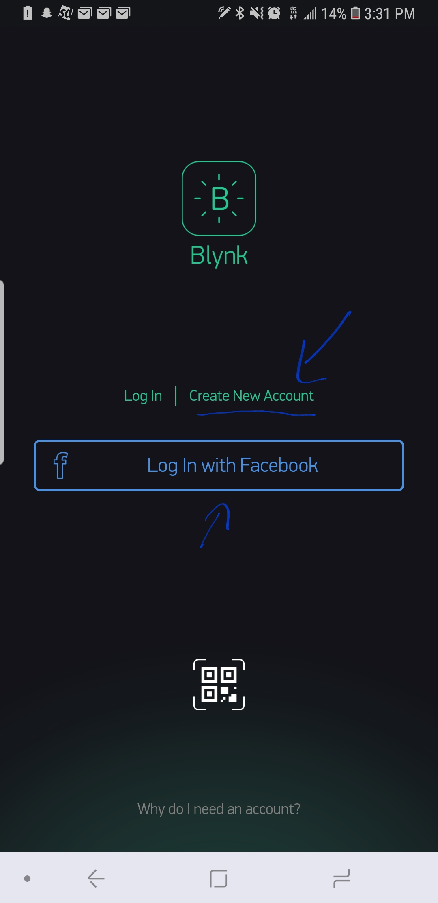 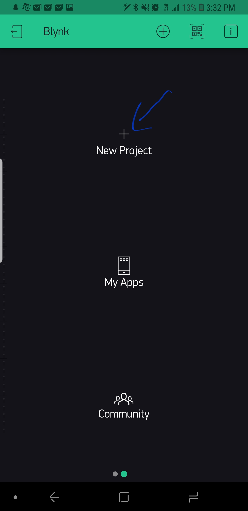 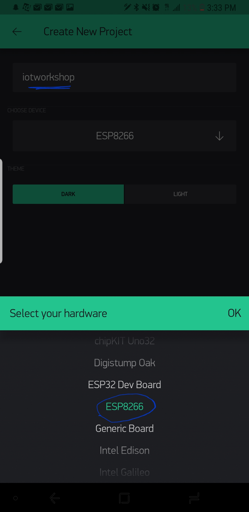
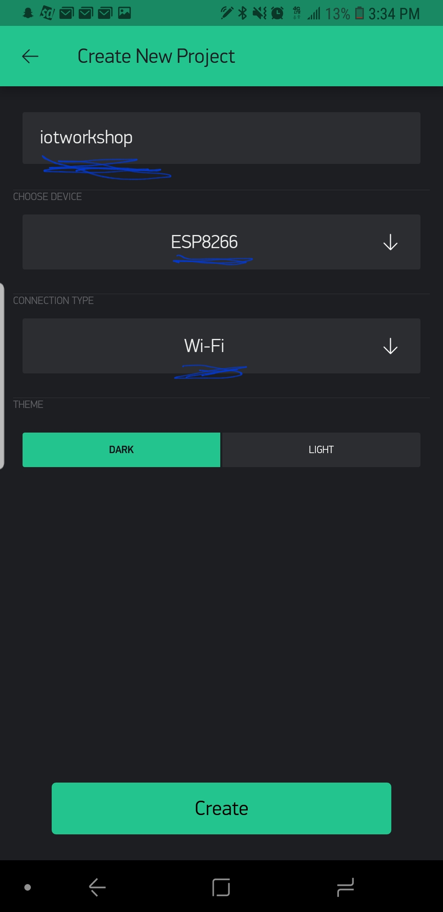 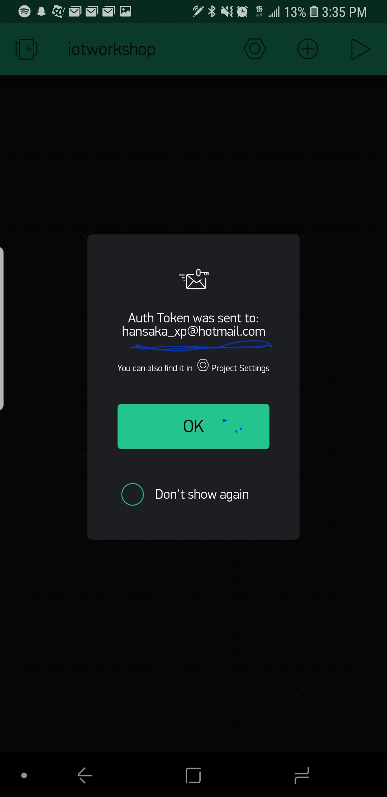 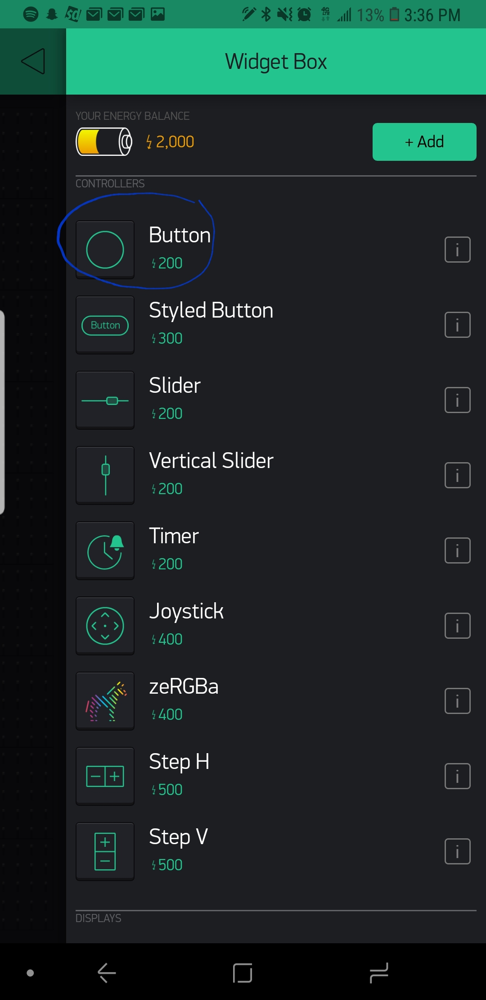
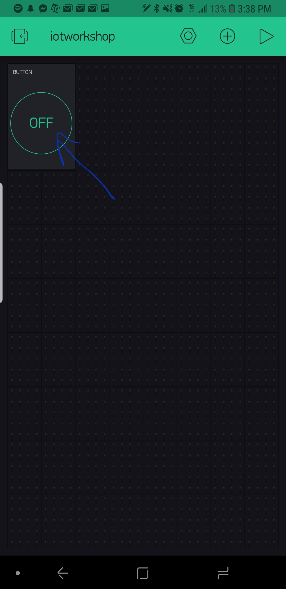 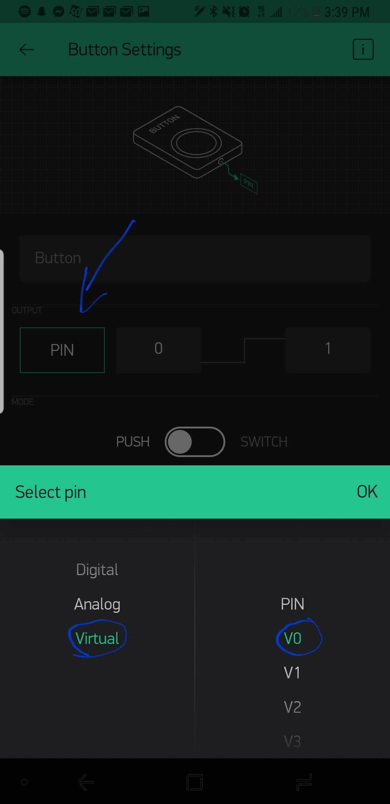 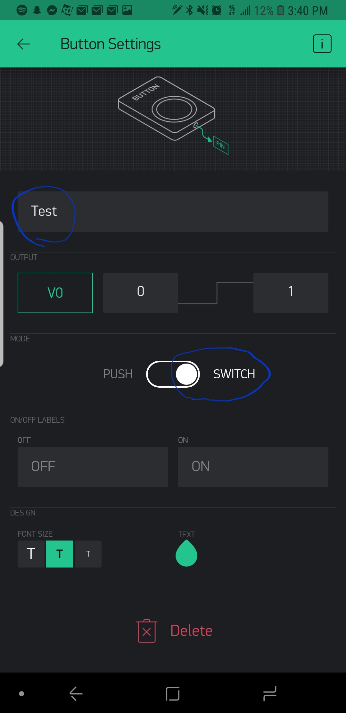
Install the Blynk Library
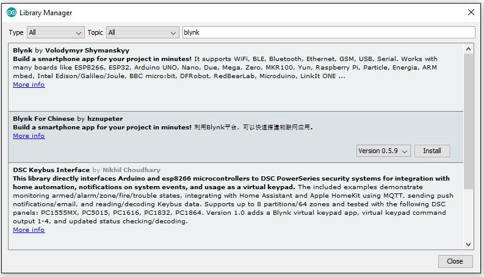Blink using the app
https://docs.blynk.cc
#include <ESP8266WiFi.h>
#include <BlynkSimpleEsp8266.h>
// You should get Auth Token in the Blynk App.
// Go to the Project Settings (nut icon).
char auth[] = "xxxxxxxx";
// Your WiFi credentials.
// Set password to "" for open networks.
char ssid[] = "xxxxxxxx";
char pass[] = "xxxxxxxx";
#define LED_PIN x
BLYNK_WRITE(V0) //Button Widget is writing to pin V1
{
digitalWrite(LED_PIN,param.asInt());
}
void setup()
{
pinMode(LED_PIN, OUTPUT);
Blynk.begin(auth, ssid, pass);
}
void loop()
{
Blynk.run();
}
Write data to the app
BLYNK_READ(V2) // Widget in the app READs Virtal Pin V5 with the certain frequency
{
// This command writes Arduino's uptime in seconds to Virtual Pin V2
Blynk.virtualWrite(2, millis() / 1000);
}
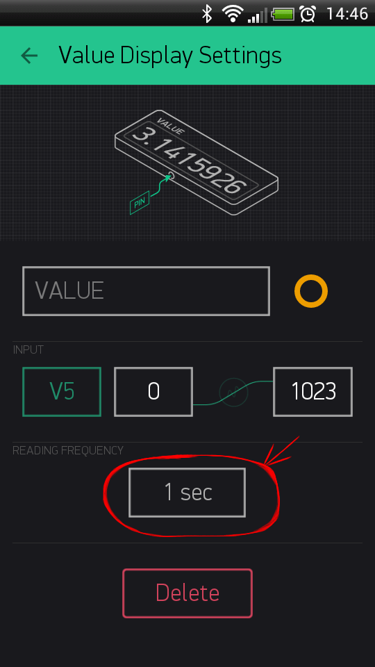
Time to Chat
WidgetTerminal terminal(V1);
BLYNK_WRITE(V1)
{
Serial.print("I received: ");
Serial.print(param.asString());
Serial.println();
}
void setup()
{
Serial.begin(115200);
Blynk.begin(auth, ssid, pass);
}
void loop()
{
Blynk.run();
if (Serial.available() > 0) {
// say what you got:
terminal.print("I received: ");
terminal.print(Serial.readString());
terminal.flush();
}
}
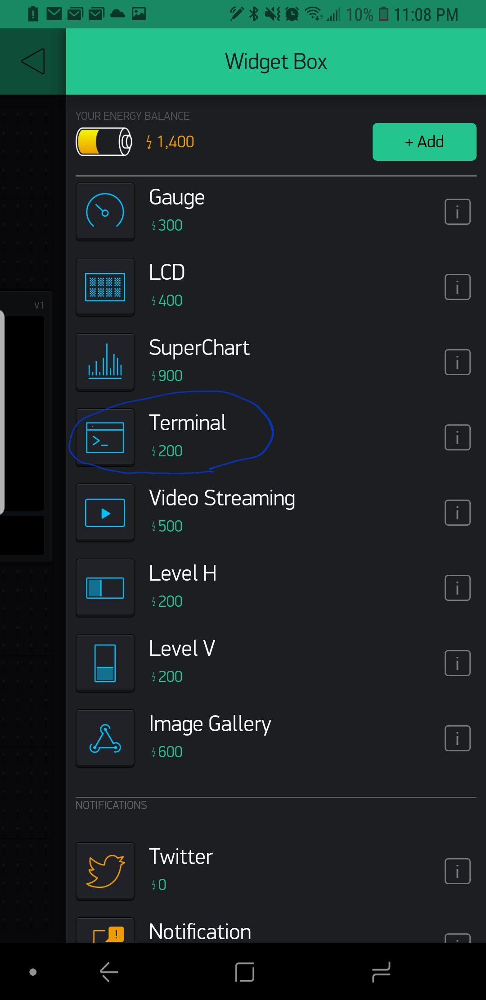
How can I interface with other hardware?
I2C
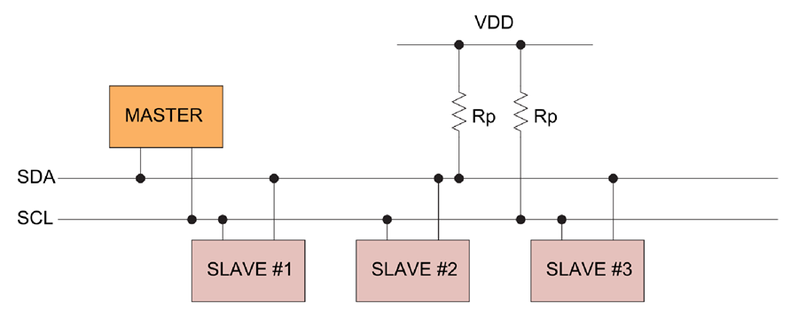 
Lets use the LCD
install the u8g2 library using Arduino IDE
#include <U8g2lib.h>
U8G2_SSD1306_128X32_UNIVISION_F_SW_I2C u8g2(U8G2_R0, /* clock=*/ 5, /* data=*/ 4, /* reset=*/ 16);
void setup() {
u8g2.begin();
}
void loop() {
u8g2.firstPage();
do {
u8g2.setFont(u8g2_font_ncenB10_tr);
u8g2.drawStr(0,24,"Hello World!");
} while ( u8g2.nextPage() );
}
Connecting to WiFi the easy way
Set up WiFiManager, which will make it unnecessary to hardcode our WiFi connection info.
Start by installing the WiFiManager library (Tools > Manage Libraries... > WiFiManager > Install)
Then, add the following includes at the top, near the include:
#include <ESP8266WiFi.h>
#include <DNSServer.h>
#include <ESP8266WebServer.h>
#include <WiFiManager.h>Next, add a global wifiManager variable above the setup() function:
// WiFi
WiFiManager wifiManager;Finally, replace the setup() function with:
void setup() {
Serial.begin(115200);
// WiFi
WiFiManager wifiManager;
wifiManager.autoConnect("AutoConnectAP", "ronin");
Blynk.config(blynk_token);
}
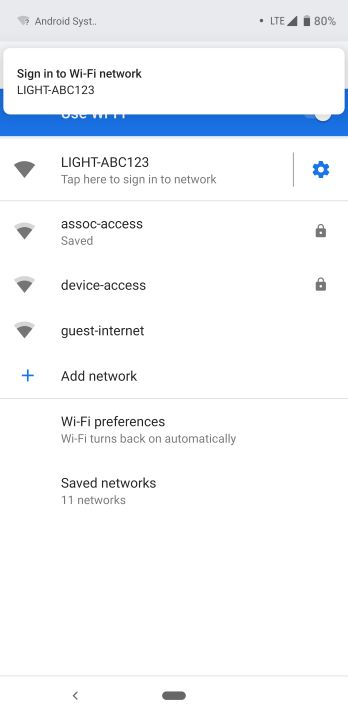
Once connected, you should see a prompt to sign in (e.g., "Tap here to sign in to network"). Otherwise, open http://192.168.4.1 in a browser.
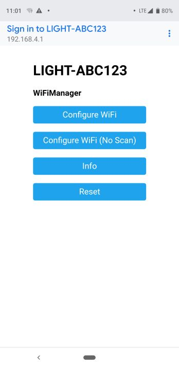 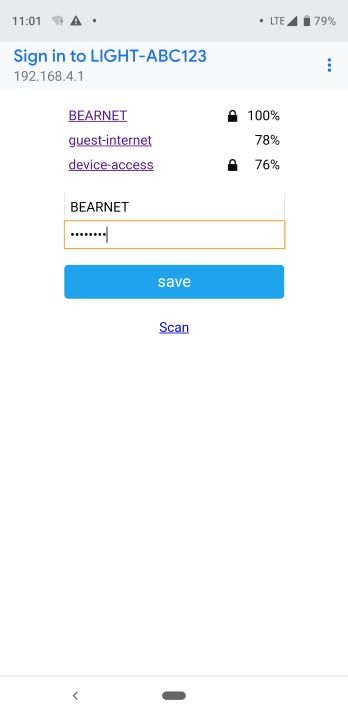 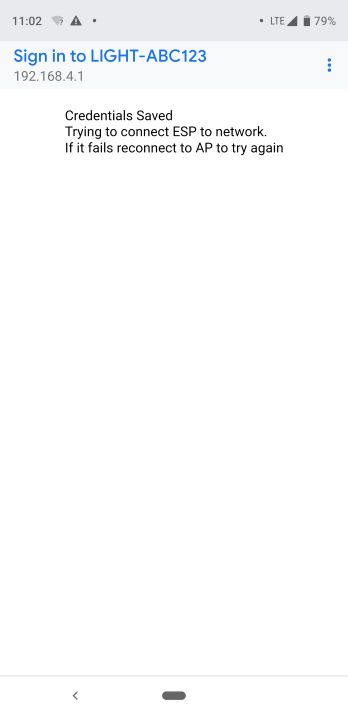
Select your network and provide the credentials
After the D1 mini restarts, verify connectivity to the network by checking for an assigned IP address in the Serial Monitor:
*WM: *WM: AutoConnect *WM: Connecting as wifi client... *WM: Using last saved values, should be faster *WM: Connection result: *WM: 3 *WM: IP Address: *WM: 192.168.1.206 WiFi IP Address: 192.168.1.206 WiFi Hostname: LIGHT-ABC123
Next Steps: Other Project Ideas
- notification light: blink or change color on events (e.g., new email/tweets, stock alerts)
- audio visualization: add a microphone for sound/music reactive lighting
- nightlight: add a photoresistor to automatically adjust brightness
- clock: synch with NTP and gradually fade from one color to another over each hour
- long distance friendship lamps